After completing this lesson, you’ll be able to:
Transformers that filter don’t transform data content, yet they are the most commonly used type of transformer!
Filtering is the technique of subdividing data as it flows through a workspace. It occurs when a transformer has multiple output connections, each carrying data that needs to be processed differently. Here (for example), the incoming stream of features A is filtered into two new streams, B and C, using a transformer with two output ports:
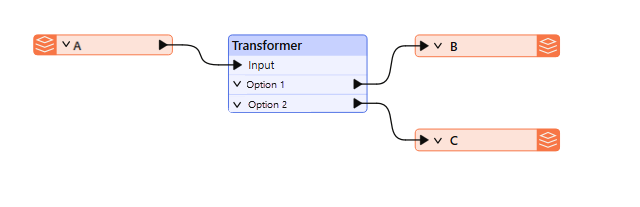
A filtering transformer may be any transformer with multiple output ports, such as the GeometryFilter or Sampler transformers, the latter of which creates a sample selection of data and separates it through Sampled and NotSampled output ports:
However, these are mostly in-built, fixed tests. Conditional filtering is where a user-defined test or condition decides which features are output to which connection. The Tester transformer is the most obvious example of this. It carries out a test with different output ports for features that pass and fail the test.
Transformers in FME allow you to filter features in several ways. A significant distinction is between transformers that filter based on attribute values and those that filter based on spatial data. An example of attribute filtering is filtering features into two streams based on the date value stored in an attribute called LastModified. An example of spatial filtering is filtering retail locations within 750 meters of a transit station.
This course covers attribute filtering only. Complete the Analyze Spatial Data course or read Common GIS Operations to learn about spatial filtering.
Many transformers in the Filters and Joins category can carry out tests and redirect data according to the results:

Although the Tester transformer is the most used in this category, there are many related transformers, such as the TestFilter, GeometryFilter, AttributeFilter, SpatialFilter, and Sampler.
The Tester and TestFilter are the two critical transformers for conditional filtering. They test the values on attribute values.
The Tester transformer is generally for single tests that produce a Yes/No result.
For example, here we wish to decide whether to send out snow plows to a particular road based on whether the value of the Snowfall attribute is greater than 150 mm (approximately 6 inches):

If snowfall exceeds 150 mm, the road feature passes the test, and the workspace will recommend sending snow plows.
Multiple Clauses
Each clause in the Tester is an individual test that allows a Passed/Failed result. For example, each of the following criteria might be a separate test:
However, the Tester allows multiple tests, where a user can combine any number of clauses using an AND and OR statement. So, instead of individual tests, I might ask:
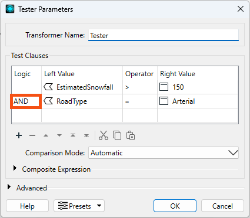
The Tester also allows mixing AND and OR statements using a Composite Test. For example:

However complex the test becomes, it still results in a single Yes/No (binary) result; features will either pass or fail this set of tests.
It's also worth remembering that we aren't restricted to simple tests of equality (A=B); in the above, there are also "greater than" and "less than" tests. That's because you can use many different operators in a test clause.
You can specify the value of Logic from a dropdown list or type values in directly. That means you aren't limited to single parentheses, as the dropdown field would lead you to believe!
The overall logic of the conditional clauses is displayed in a text box below the tests.

The numbers in the expression refer to the row number in the test clauses table. So "1 AND 2" means the test clauses in row 1 and row 2 (the AND means both clauses have to pass for the overall feature to pass).
You can adjust the test composition by directly editing the composite expression. Click the Edit button and type in a new expression. Experienced users will find this faster than using the Logic column dropdown options.
The Logic column and the Composite Expression field are mirror images of each other. Any changes to either are reflected in the other. For example, if I changed AND to OR in the logic column (second row), the composite expression would change to match. Conversely, if I changed the composite expression to 1 AND ( 2 OR 3 ), then the test clauses would change to match, including deleting the now unused 4th row.
If a Tester or TestFilter has a feature cache, you can access a list of cached values to fill in your tests. This "data-aware" transformer dialog is available in the Tester, TestFilter, AttributeManager, and AttributeExposer.
Operators
The list of operators available in the Tester transformer (or in many of the other locations that make use of the Tester dialog) looks like this:

Besides the usual operators, some are based on a SQL WHERE clause. These include:
...plus there are other tests that check for the existence of attributes and values:
"Attribute has a value" is the opposite of the three other tests; for example, this attribute is not Null, AND it is not an empty string, AND it is not missing. Incidentally, "missing" means the attribute does not exist on the tested feature.
"Contains Regex" means only part of the string needs to match. For example...
Attribute Value: abcd
Search String: ^ab
Contains Regex: PassedFor example, the entire string doesn't need to match.
The TestFilter allows multiple conditions, each with multiple test clauses. Each condition is given an output port, with an additional output port for features that fail all test conditions.
The TestFilter is similar to the CASE or SWITCH command in programming or scripting languages. In Workbench, it looks like this:

Notice that there are multiple conditions and an output port for each. Each condition/port combination is equivalent to a single Tester transformer; hence, the TestFilter is an excellent way to combine multiple Tester transformers into one.
The TestFilter output ports can be given custom names rather than Passed/Failed, which is another advantage to this transformer over the Tester.
The TestFilter has the complete set of operators available with the Tester, such as equals, greater than, less than, and so forth. Each condition is tested in turn.
Features that pass are output through the matching output port. Features that fail are sent to the following condition in the list. Therefore, it’s essential to get the conditions in the correct order.
The TestFilter is very good for filtering a feature by a set of cascading conditions; for example, here are tests to determine whether to send out a snow plow:
- Has there been more than 150 mm of snowfall?
- Has there been more than 100 mm of snowfall, AND is this an Arterial road?
- Is the temperature less than zero degrees Celsius, AND was sand last applied more than 24 hours ago?
It’s a set of cascading tests because if there has been more than 150 mm of snow, the plows are sent out anyway; you don’t need to test any other criteria. So, the test order is significant. If every test fails, then the plows are not sent out. If using the above snowfall example, you could use a single TestFilter instead of three Tester transformers.
Because the TestFilter can carry out a single test (as well as multiple ones), it's possible to use it exclusively instead of the Tester transformer.
While using the TestFilter, you can choose to output all features through the First Passing Port or All Passing Ports using the Test Output dropdown.
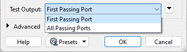
⭐ New for FME 2025.1: the TestFilter now has a new parameter called “Output Attribute Name” in the Advanced parameters section. You can choose a name for this attribute and it will store the name of the output port as a value. This option lets you filter your results and store the result in an attribute for accessing later, allowing you to avoid the repetitive pattern of using many AttributeCreators after a TestFilter.

Sven, a Planning Analyst, has been asked to gather park maintenance data to help understand the impact of a proposed change to park funding in the Downtown neighborhood. He has a MITAB dataset of parks and needs to filter the data to estimate the proposed changes' cost accurately.
Sven starts FME Workbench (2025.0.1 or later) and opens the starting workspace (C:\FMEData\Workspaces\TransformAttributes\what-is-conditional-filtering.fmw). This workspace reads in the parks MapInfo TAB data, slightly edits the schema using the AttributeManager, and then writes it back to MapInfo TAB.
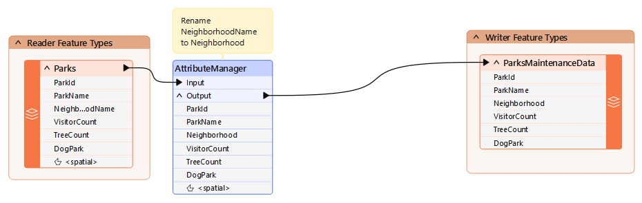
Sven should remove dog parks from the data because they have their own costs.
Sven can do this with a Tester transformer. He clicks on the connection from the AttributeManager output port to the ParksMaintenanceData feature type on the Writer.
Start typing the word Tester. Double-click on Tester in the list of transformers to add one to the workspace. After tidying up the layout of the canvas, the workspace will now look like this:
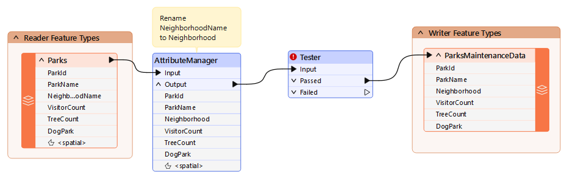
Notice that the Passed output port is the one connected by default.
Inspect the parameters for the Tester transformer. Click in the Left Value field, and from there, click the down arrow and choose Attribute Value > DogPark:

For the Right Value, click into the field and type the value N. The operator field should be filled in automatically as the equals sign (=), which is what we want in this case.
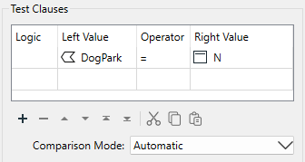
Click OK to accept the values and close the dialog.
The test is for DogParks = N because we want to keep those features, and the Passed port is connected. If the test were DogParks = Y, then the Failed port would be the one to connect.
Save and run the workspace.
To confirm it ran correctly, you should have 73 features from the Tester's Passed output port and seven from the Tester's Failed output port. You can inspect the failed features by clicking the feature cache icon to confirm that these are, in fact, the dog parks:
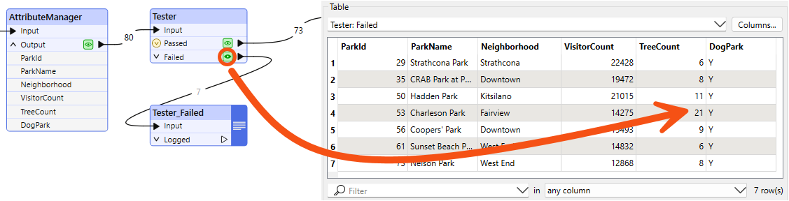
After using the Tester, Sven realizes he'd be better off using a TestFilter here. He would like to separate dog parks, non-dog parks that have a name, and unnamed parks. The TestFilter will let him do that in one transformer instead of using multiple Testers.
He deletes the Tester and it's connection line and adds a TestFilter to replace it:
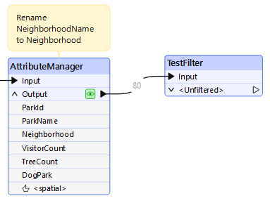
He double-clicks the TestFilter to edit its parameters.
He will configure one output port at a time. To create the first test, he double clicks the first cell in the table:
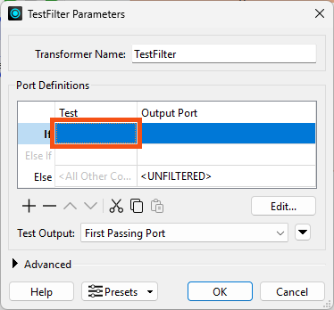
He configures the first port to output dog parks, using Dog Parks = Y this time. He names the Output Port Dog Parks:
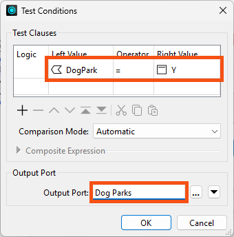
He clicks OK to confirm this port's configuration.
To add tests for the next port, he clicks the first cell in the second row ("Else If"):
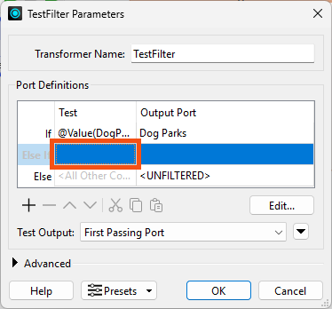
This test is ParkName Attribute Has a Value, and the Output Port is Named Non-Dog Parks:
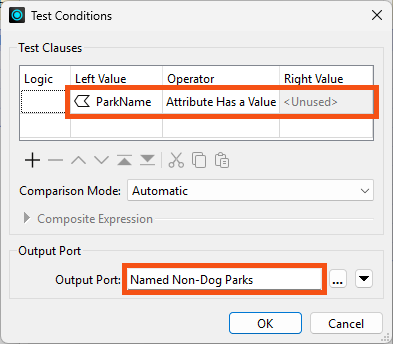
He clicks OK.
Finally, he names the "Else" port Unnamed Parks:
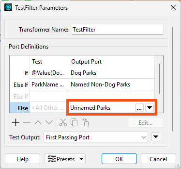
Because he expects each park will only qualify for a single port, he leaves the default value for Test Output to First Passing Port.
Port order matters. All dog parks will be caught by the first test, which is why Sven doesn't need to test for DogPark = N in later tests, for example.
Finally, he clicks OK to finish configuring the TestFilter.
His TestFilter now has three output ports. He adds attached annotation to describe its function, "Filter by park type":
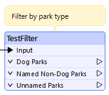
Sven plans to process the Dog Parks and Unnamed Parks streams later. For now, he just connects Named Non-Dog Parks to his writer feature type:
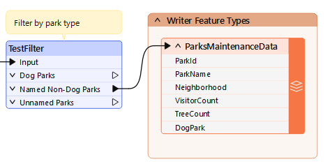
He runs the workspace. He has successfully filtered his features into three streams with the TestFilter.
Take note of the number of filtered features; you'll need it for the quiz.